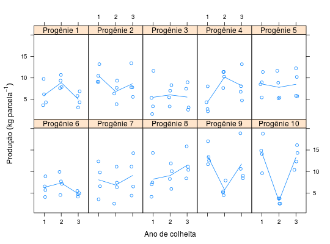

Experimento que estudou a produção média de grãos de café-cereja, obtidos por Mendes (1994), em função da progênie em 3 anos. Foi utilizado o delineamento de blocos casualizados.
Um data.frame com 120 observações e 4 variáveis, em
que
proganoblocprodRAMALHO et al. (2005), pág. 128.
Mendes, A. N. G. Avaliação de Metodologias Empregadas na Seleção de Progênies do Cafeeiro (Coffea arabica L.) no estado de Minas Gerais. Lavras: UFLA, 1994. 167p.
library(lattice) data(RamalhoTb8.12)#> Warning: data set ‘RamalhoTb8.12’ not foundstr(RamalhoTb8.12)#> 'data.frame': 120 obs. of 4 variables: #> $ prog: Factor w/ 10 levels "1","2","3","4",..: 1 1 1 2 2 2 3 3 3 4 ... #> $ ano : Ord.factor w/ 3 levels "1"<"2"<"3": 1 2 3 1 2 3 1 2 3 1 ... #> $ bloc: Factor w/ 4 levels "1","2","3","4": 1 1 1 1 1 1 1 1 1 1 ... #> $ prod: num 4.3 7.62 3.11 13.2 7.7 ...ftable(with(RamalhoTb8.12, tapply(prod, list(ano = ano, prog = prog, bloc = bloc), FUN = identity)))#> bloc 1 2 3 4 #> ano prog #> 1 1 4.30 3.65 6.18 9.76 #> 2 13.20 9.11 10.48 9.10 #> 3 1.59 5.35 3.38 11.64 #> 4 2.76 4.34 2.22 8.04 #> 5 11.38 8.52 8.96 5.45 #> 6 5.69 4.07 6.55 8.88 #> 7 9.80 3.54 12.37 6.58 #> 8 7.00 4.12 14.32 7.44 #> 9 11.70 12.56 13.36 17.05 #> 10 9.60 14.87 18.82 14.08 #> 2 1 7.62 9.36 7.86 10.70 #> 2 7.70 6.36 3.88 9.36 #> 3 3.36 7.02 5.47 8.31 #> 4 10.29 11.38 7.65 11.40 #> 5 8.87 11.65 5.41 5.26 #> 6 7.15 4.54 7.71 9.91 #> 7 6.35 2.54 11.12 7.41 #> 8 11.88 8.29 5.95 10.08 #> 9 4.49 7.91 5.36 5.12 #> 10 3.73 2.54 3.73 2.54 #> 3 1 3.11 5.81 4.34 6.88 #> 2 13.42 7.80 7.82 5.58 #> 3 2.59 7.48 3.11 8.98 #> 4 4.76 13.19 8.07 6.77 #> 5 12.23 5.75 5.84 10.22 #> 6 4.16 4.93 5.50 4.70 #> 7 11.14 4.41 14.27 6.52 #> 8 10.40 8.42 15.84 11.14 #> 9 8.44 10.62 9.02 18.91 #> 10 10.39 14.32 16.14 12.34xyplot(prod ~ ano | prog, data = RamalhoTb8.12, jitter.x = TRUE, type = c("p", "a"), as.table = TRUE, layout = c(NA, 2), strip = strip.custom(strip.names = TRUE, var.name = "Progênie", sep = " "), xlab = "Ano de colheita", ylab = expression("Produção"~(kg~parcela^{-1})))aggregate(prod ~ prog, data = RamalhoTb8.12, FUN = function(x) { c(mean = mean(x), var = var(x)) })#> prog prod.mean prod.var #> 1 1 6.630833 6.289899 #> 2 2 8.650833 7.950754 #> 3 3 5.690000 9.279036 #> 4 4 7.572500 12.670239 #> 5 5 8.295000 7.174464 #> 6 6 6.149167 3.662517 #> 7 7 8.004167 13.737481 #> 8 8 9.573333 11.594079 #> 9 9 10.378333 21.086979 #> 10 10 10.258333 33.584870